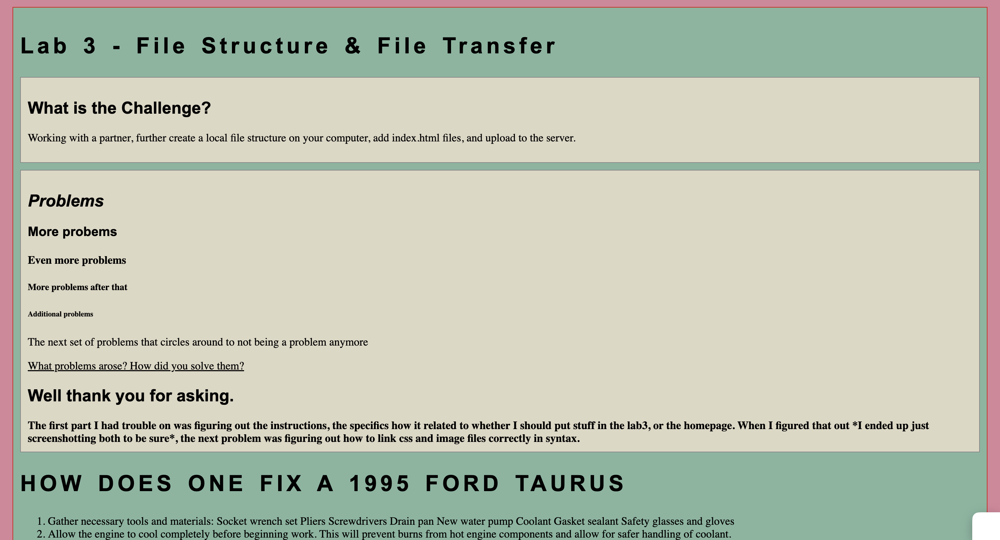
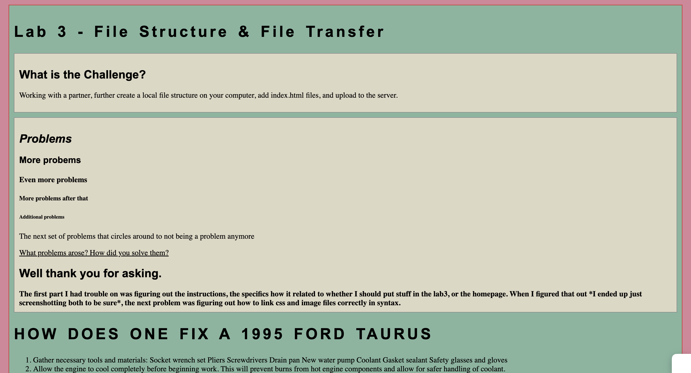

Lab 3 - File Structure & File Transfer
What is the Challenge?
Working with a partner, further create a local file structure on your computer, add index.html files, and upload to the server.
Problems
More probems
Even more problems
More problems after that
Additional problems
What problems arose? How did you solve them?
Well thank you for asking.
HOW DOES ONE FIX A 1995 FORD TAURUS
- Gather necessary tools and materials: Socket wrench set Pliers Screwdrivers Drain pan New water pump Coolant Gasket sealant Safety glasses and gloves
- Allow the engine to cool completely before beginning work. This will prevent burns from hot engine components and allow for safer handling of coolant.
- Disconnect the negative terminal of the battery to prevent accidental electrical shorts.
- Place a drain pan underneath the radiator drain plug and open the plug to drain the coolant into the pan.
- Locate the water pump on the engine. It is typically driven by a belt connected to the crankshaft pulley.
- Loosen the tension on the serpentine belt or accessory drive belt that drives the water pump. This may require using a socket wrench to loosen the tensioner pulley.
- Remove the serpentine belt or accessory drive belt from the water pump pulley.
- Remove any components blocking access to the water pump, such as hoses, brackets, or other parts connected to the pump. Use a socket wrench to remove the bolts securing the water pump to the engine block.
- Once the bolts are removed, carefully pry the old water pump away from the engine block. Be cautious not to damage the mating surfaces.
- Clean the mounting surface on the engine block to remove any old gasket material or debris.
- Apply a thin layer of gasket sealant to the new water pump mating surface to ensure a proper seal.
- Position the new water pump onto the engine block and secure it in place with the bolts.
- Reattach any components that were removed to access the water pump, such as hoses and brackets.
- Reinstall the serpentine belt or accessory drive belt onto the water pump pulley and tension it properly. Refill the radiator with coolant according to the manufacturer's specifications.
- Reconnect the negative terminal of the battery. Start the engine and check for leaks around the water pump. If leaks are detected, shut off the engine and tighten any bolts or connections as needed.
- Once the repair is complete and no leaks are present, allow the engine to reach operating temperature and verify that the cooling system is functioning properly. Dispose of old coolant and any waste materials in accordance with local regulations.
Answer brought to you quick by ChatGPT ^^
Reflection
One piece of advice for coding that's stuck with me is just simple practice. Like music, you just gotta do it every day or it'll fall out of your brain.
Results
Ta-da
 
